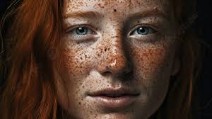

Curiosidades Fascinantes
sobre os Ruivos
Descubra dados científicos pouco conhecidos, estatísticas surpreendentes
e fatos curiosos sobre os portadores do "código vermelho".
Introdução: O Fascínio pelos Detalhes
Além das características genéticas e biológicas principais, os ruivos possuem uma série de peculiaridades e curiosidades que os tornam ainda mais fascinantes. Prepare-se para descobrir fatos que vão desde combinações extremamente raras até mitos culturais interessantes.
1. O Unicórnio Humano: A Combinação Mais Rara
A Estatística Impressionante
A combinação de cabelos ruivos naturais e olhos azuis é considerada a mais rara do mundo humano, presente em apenas 0.17% da população global.
Por que tão raro?
Genética do Cabelo Ruivo
- Traço recessivo (gene MC1R)
- Necessita herdar duas cópias do gene
- Prevalência: menos de 2% da população mundial
Genética dos Olhos Azuis
- Traço recessivo (gene OCA2/HERC2)
- Também necessita duas cópias
- Prevalência: cerca de 8% da população mundial
Cálculo da probabilidade: 2% (ruivos) × 8% (olhos azuis) = 0.16% - ajustado para 0.17% considerando correlações genéticas.
2. Distribuição Geográfica Surpreendente
Os Países com Mais Ruivos
| País | Percentual de Ruivos | População Total Aproximada |
|---|---|---|
| Escócia | 13% | 5.4 milhões |
| Irlanda | 10% | 4.9 milhões |
| País de Gales | 10% | 3.1 milhões |
| Inglaterra | 6% | 56 milhões |
| Estados Unidos | 2-6% | 331 milhões |
| Brasil | 1-3% | 213 milhões |
Curiosidades Regionais
- Marrocos: Comunidade Berbere com alta incidência de ruivos
- Afeganistão: Povo Nuristani conhecido por seus ruivos
- Japão: A província de Aomori tem tradição de ruivos Ainu
- Rússia: Região de Udmúrtia - "a terra dos ruivos"
3. Sardas: O Escudo Imperfeito
A Ciência por Trás das Sardas
As sardas dos ruivos não são simplesmente "pintinhas" aleatórias. São aglomerados concentrados de melanócitos (células produtoras de melanina) tentando desesperadamente proteger a pele da radiação UV.
Características das Sardas de Ruivos:
- Composição
- Aglomerados densos de melanina (principalmente feomelanina)
- Distribuição
- Mais comuns em áreas expostas ao sol: rosto, braços, ombros
- Evolução
- Tentativa evolutiva de criar proteção solar "pontual"
- Eficácia
- Proteção irregular e insuficiente contra UV
4. Expectativa de Vida e Saúde: Mitos e Verdades
Riscos Aumentados
Comprovado Cientificamente
- Melanoma: Risco 10-100x maior que morenos
- Doença de Parkinson: Alguns estudos sugerem risco reduzido
- Esclerose Múltipla: Maior incidência em países nórdicos
Em Estudo
- Câncer de Próstata: Possível risco reduzido
- Doenças Autoimunes: Maior incidência de algumas
- Endometriose: Possível maior prevalência
Vantagens de Saúde
- Vitamina D: Síntese extremamente eficiente
- Osteoporose: Menor incidência em regiões com pouca luz solar
- Doença de Alzheimer: Alguns estudos sugerem risco reduzido
- Tolerância à dor: Maior resistência a certos tipos de dor
5. Curiosidades Culturais e Sociais
Superstições ao Redor do Mundo
| País/Região | Crença | Origem Provável |
|---|---|---|
| Grécia Antiga | Transformam-se em vampiros após morrer | Associação cabelo vermelho = sangue |
| Polônia | Ver um ruivo pela manhã dá azar | Tradições eslavas medievais |
| Inglaterra Vitoriana | Cabelo de ruivo traz boa sorte no amor | Folclore rural |
| Irlanda | Ruivos são teimosos e temperamentais | Estereótipos culturais |
| Estados Unidos | "Gingers have no soul" (piada moderna) | Episódio de South Park (2005) |
6. Ruivos Famosos e seus Segredos
Celebridades que Escondiam sua Cor Natural
- Marilyn Monroe: Naturalmente ruiva, tornou-se loira platinada
- Madonna: Na infância tinha cabelos ruivo-dourados
- Lady Gaga: Naturalmente ruiva (Stefani Germanotta)
- Christina Hendricks: Sua cor icônica é tingida - ela é naturalmente loira
- Rita Hayworth: Morena natural que popularizou o ruivo em Hollywood
Ruivos que Abraçaram sua Naturalidade
Atrizes
- Julianne Moore
- Nicole Kidman
- Jessica Chastain
- Amy Adams
Atores
- Ed Sheeran
- Prince Harry
- Damian Lewis
- Michael Fassbender
7. Fatos Científicos Pouco Conhecidos
Genética
- O gene ruivo pode "pular" várias gerações
- É possível ser portador sem manifestar a característica
- Gêmeos idênticos podem ter expressões diferentes do gene
- A cor pode mudar com a idade (escurecer)
Biologia
- Ruivos têm menos cabelos na cabeça (cerca de 90.000 vs 140.000)
- Mas cada fio é mais grosso e visível
- A cor ruiva desbota menos que outras cores naturais
- São mais sensíveis a anestesia local também
8. Estatísticas Surpreendentes
| Estatística | Valor | Explicação |
|---|---|---|
| População mundial ruiva | 140-160 milhões | Baseado em 2% de 7.8 bilhões |
| Ruivos com olhos azuis | ~13 milhões | 0.17% da população mundial |
| Anestesia necessária | +20% em média | Devido ao gene MC1R |
| Risco de melanoma | 10-100x maior | Falta de eumelanina protetora |
| Eficiência vitamina D | 4x mais eficiente | Pele clara em climas nórdicos |
9. Mitos vs Realidade
- Mito: Ruivos estão desaparecendo
-
Realidade: Falso. O gene é recessivo mas não está desaparecendo. Com a globalização e mistura de populações, pode até se espalhar mais.
- Mito: Todos os ruivos têm sardas
-
Realidade: A maioria tem, mas não todos. A presença e quantidade de sardas variam conforme a expressão genética individual.
- Mito: Ruivos sentem mais dor
-
Realidade: Parcialmente verdade. São mais sensíveis a dor térmica, mas mais resistentes a outros tipos de dor física.
- Mito: Não podem tomar sol
-
Realidade: Podem, mas com muito mais proteção. FPS 50+, roupas protetoras e evitar horários de pico.
10. Conclusão: A Beleza da Singularidade
"Cada ruivo carrega não apenas uma cor de cabelo única, mas uma história genética extraordinária, características biológicas especiais e um lugar único na tapeçaria da diversidade humana."
As curiosidades sobre ruivos revelam como uma simples variação genética pode criar uma miríade de características fascinantes que vão desde combinações extremamente raras até adaptações evolutivas inteligentes.
Mais do que uma cor de cabelo, ser ruivo é fazer parte de um grupo seleto com uma herança biológica e histórica verdadeiramente extraordinária.